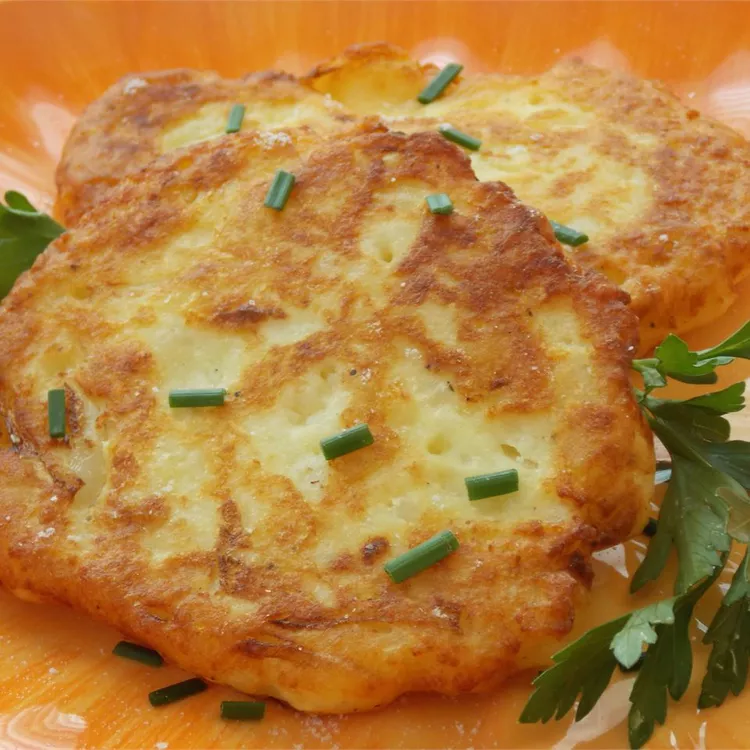

Potato Cakes

Description
A potato cake is a quick and easy meal to make with only a few ingredients. You can enjoy it on its own or add
any sauce, like ketchup, and it will still be delicious.
Ingredients
- Potatoes
- Flour
- Onion
- Egg
- Seasonings
- Oil
Steps
- Mix mashed potatoes, flour, onion, egg, black pepper, and salt in a bowl until well combined, similar to a
batter consistency.
- Heat vegetable oil in a skillet over medium heat.
- Drop 4-inch circles of batter into the hot oil.
- Cook until golden brown, about 4 to 5 minutes per side; drain on paper towels.
- Repeat with any remaining batter.